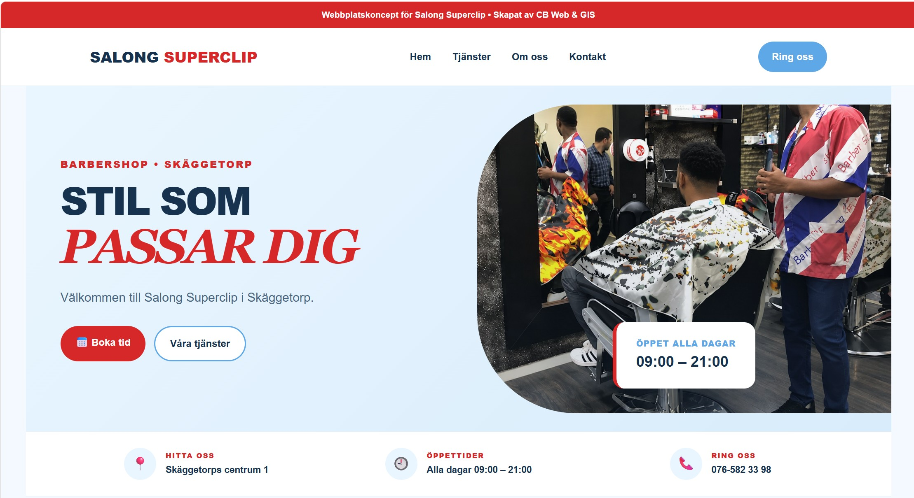
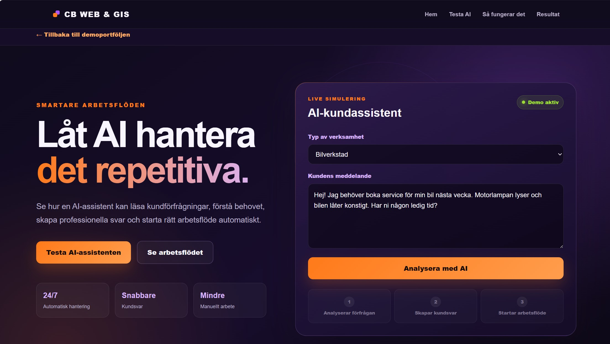
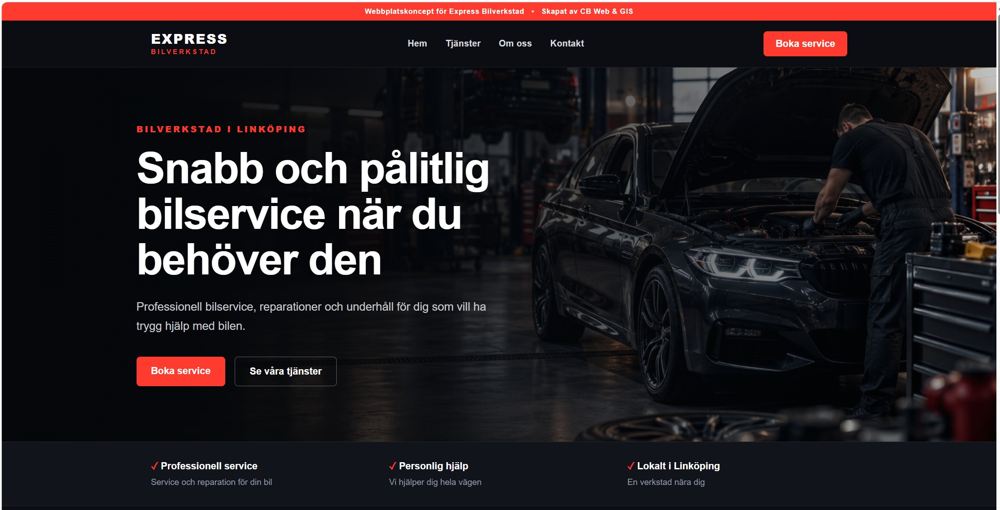
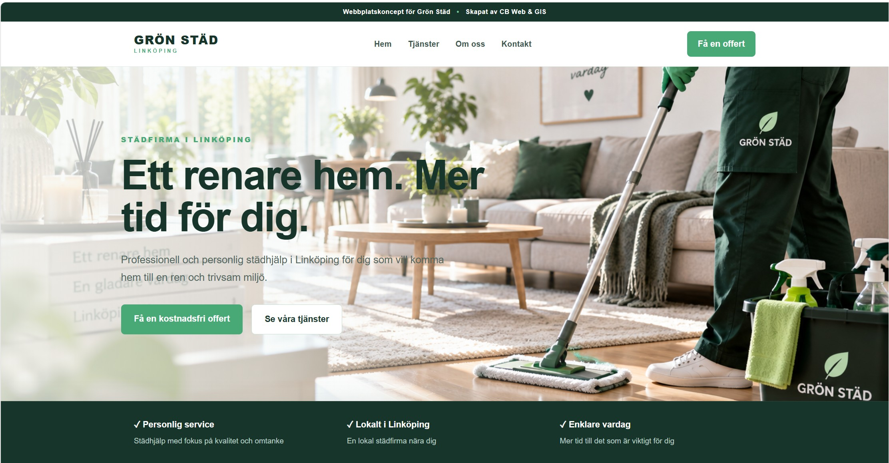
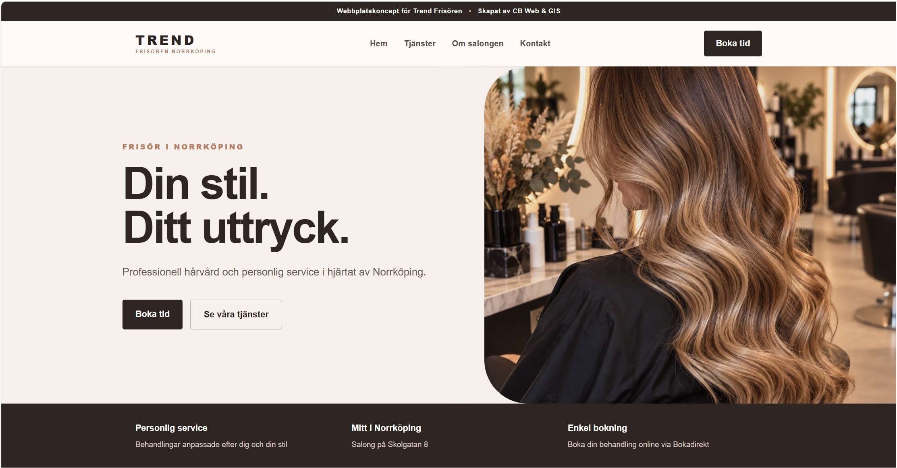
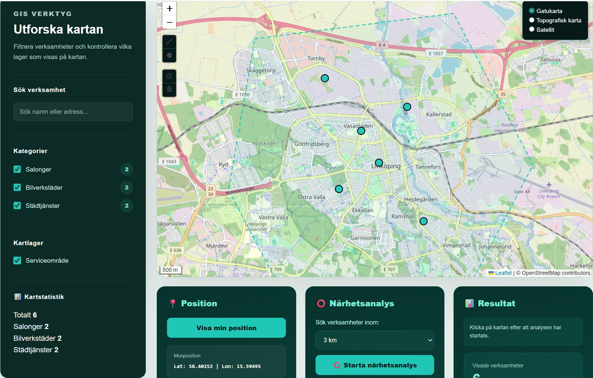
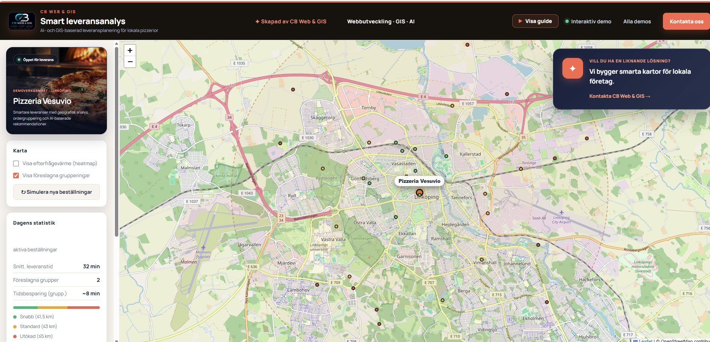
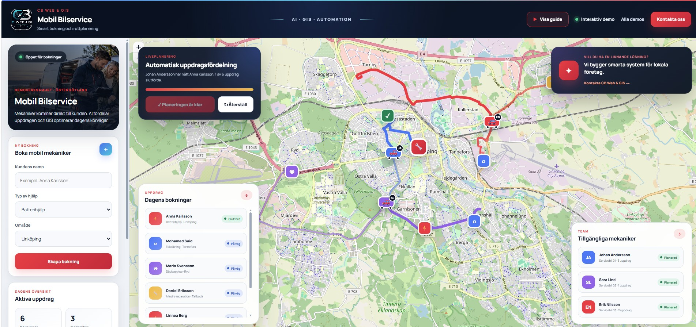

01
WEBBDESIGN • SALONG
Salong Superclip
Modernt webbplatskoncept för en barbershop i Skäggetorp, Linköping.
Se live demo →WEBB • GIS • DIGITALA LÖSNINGAR
Moderna webbplatser, interaktiva kartor och digitala lösningar för småföretag och organisationer.
DEMO PORTFOLIO

WEBBDESIGN • SALONG
Modernt webbplatskoncept för en barbershop i Skäggetorp, Linköping.
Se live demo →
AI • AUTOMATION
Interaktiv AI-demo som visar hur företag kan analysera kundförfrågningar, skapa svar och automatisera arbetsflöden.
Testa AI-demon →
WEBBDESIGN • BILVERKSTAD
Modernt webbplatskoncept för bilservice och lokal verkstadsverksamhet.
Se live demo →
WEBBDESIGN • STÄDFIRMA
Modernt webbplatskoncept för en lokal städfirma med fokus på tjänster, tydlig information och offertförfrågningar.
Se live demo →

WEB GIS • INTERAKTIV KARTA
Web GIS-demo med företagsinformation, kategorifilter, kartlager, sökfunktion och geografisk närhetsanalys.
Utforska GIS-demon →
AI • WEB GIS • LEVERANSANALYS
Interaktiv AI- och GIS-demo med leveranszoner, efterfrågevärme, smart ordergruppering och rekommendationer för lokala pizzerior.
Utforska leveransdemon →
AI • WEB GIS • RUTTPLANERING
Interaktiv AI- och GIS-demo för kundbokning, automatisk uppdragsfördelning, optimerade körvägar och liveuppföljning av mobila mekaniker.
Utforska servicedemon →VÅRA TJÄNSTER
Moderna, responsiva webbplatser anpassade för mobil och dator.
Interaktiva kartor och geografiska lösningar direkt på webben.
Praktiska AI-lösningar som hjälper företag att hantera kundförfrågningar, skapa svar och automatisera återkommande arbetsuppgifter.
KONTAKT
Kontakta CB Web & GIS för webbdesign, interaktiva kartor och digitala lösningar anpassade efter din verksamhet.